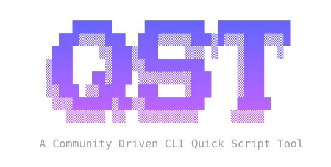

Qst, pronounced "quest", is a TUI Linux application launcher built with Rust + Ratatui. Launch apps, browse files, and run scripts from one keyboard-first interface.
You can find the site at my github repo
Awesome qst is a curated list of extensions, resources, and documentation for the broader Qst ecosystem.
back